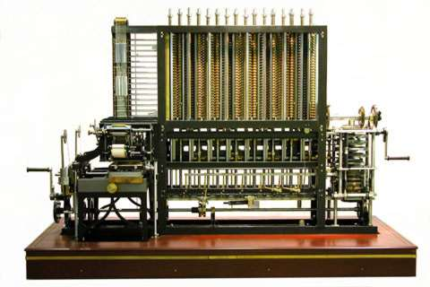

Diferenčni stroj
A difference engine, first created by Charles Babbage, is an automatic mechanical calculator designed to tabulate polynomial functions. Its name is derived from the method of divided differences, a way to interpolate or tabulate functions by using a small set of polynomial coefficients. Most mathematical functions commonly used by engineers, scientists and navigators, including logarithmic and trigonometric functions, can be approximated by polynomials, so a difference engine can compute many useful tables of numbers. The historical difficulty in producing error-free tables by teams of mathematicians and human "computers" spurred Charles Babbage's desire to build a mechanism to automate the process
